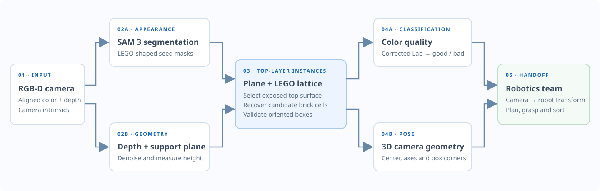
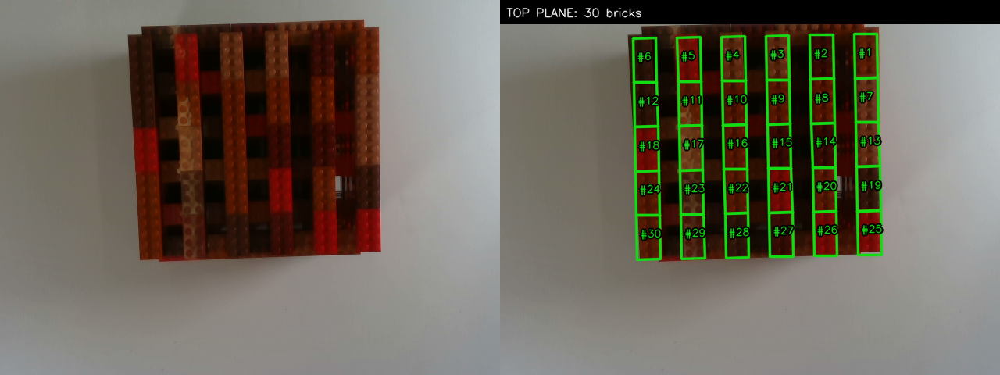
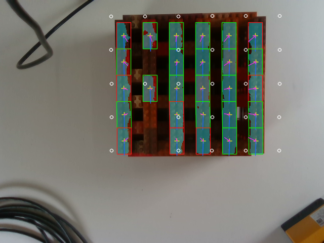
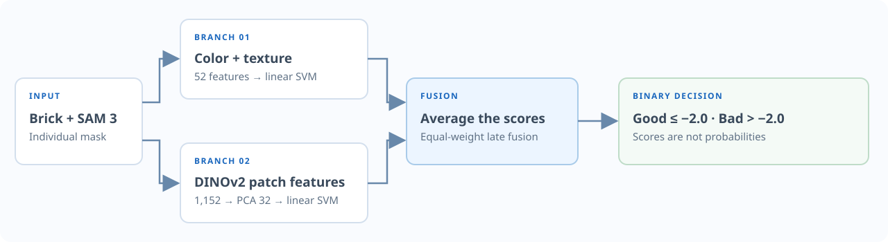
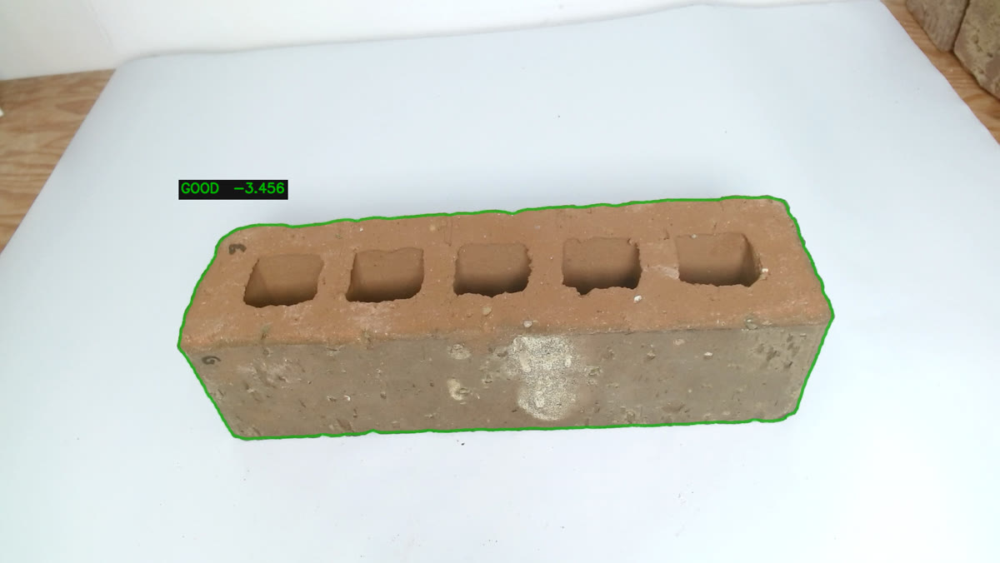

PHYSICAL BRICKS
Classify real brick samples
Build a computer vision system that distinguishes good bricks from bad bricks using the provided examples. The sample set contained 10 physical bricks: 4 good and 6 bad.
MARMON × FRANKA ROBOTICS HACKATHON
Bridging brick inspection and robotic manipulation through real-brick classification and RGB-D perception of LEGO stacks.
01 / THE CHALLENGE
After firing, bricks are stacked on large kiln cars and must be inspected and sorted by shade before they are restacked for shipping. The hackathon separated this challenge into two connected tasks.
PHYSICAL BRICKS
Build a computer vision system that distinguishes good bricks from bad bricks using the provided examples. The sample set contained 10 physical bricks: 4 good and 6 bad.
LEGO SORTING DEMONSTRATION
Full-size stacks are too large and heavy to reproduce in the lab, so LEGO bricks represented the stacked-brick sorting problem. The team was tasked to:
My main contribution was the LEGO perception pipeline: identifying accessible bricks, classifying them, and providing camera-frame pose information to the robotics team.
02 / THE PERCEPTION PIPELINE
The perception system combines learned segmentation with depth and geometric priors. Color classification and camera-frame pose estimation are separate downstream stages.

Robot execution requires a camera-to-robot transform and the robotics team’s motion planning and grasping system.
EXPLORE THE PIPELINE
Hover to preview a stage, or select one to keep its details open.
Aligned camera observations establish the scene geometry.
The RGB-D camera provides aligned color and depth frames. Camera intrinsics describe how image pixels relate to camera rays.

03 / QUALITATIVE RESULTS
The demonstration brings the perception and robotics work together. The examples below show recorded top-layer detection, color classification and estimated camera-frame geometry.
A Franka robot and gripper interact with the LEGO setup. The perception system provides the brick observations and pose information used by the robotics team.
Video is silent. A successful visual example is not a measured pick success rate.



04 / PHYSICAL BRICKS
A separate classifier combines hand-designed color and texture statistics with learned DINOv2 representations for photographs of real bricks. The dataset contains 10 physical bricks: 4 good and 6 bad, photographed in 258 images.

EXPLORE THE CLASSIFIER
Hover to preview a stage, or select one to keep its details open.
A brick mask defines the region to inspect.
An RGB camera captures the scene. SAM 3 segments individual bricks, producing a mask for each classifier input.

The live viewer segments visible bricks and displays good/bad predictions using the −2 binary decision threshold.
The video demonstrates the interface; it is not a separate accuracy evaluation.
The first two figures use the original masks and zero threshold. The last uses photos of bricks included in training. Neither measures performance on new live-camera bricks.
05 / WORKING WITH ROBOTICS
For each detected LEGO brick, the exporter records its quality and fitted camera-frame center, orientation, and 3D corners. The two designated out-of-spec 2×4 elements are medium nougat (6135191/3001) and reddish brown (4211201/3001). The robotics team can transform that geometry into the robot base frame for planning.
Camera-frame coordinates are in metres: +x right, +y down, +z forward. Hand–eye calibration is required to express a target in the robot base frame.
06 / REFLECTIONS
Physical height helps distinguish the top layer from visible lower bricks.
A lattice can propose instances where segmentation misses or merges neighboring bricks.
Ten physical bricks provide a useful prototype, but broader unseen-brick and live-camera testing remains necessary.